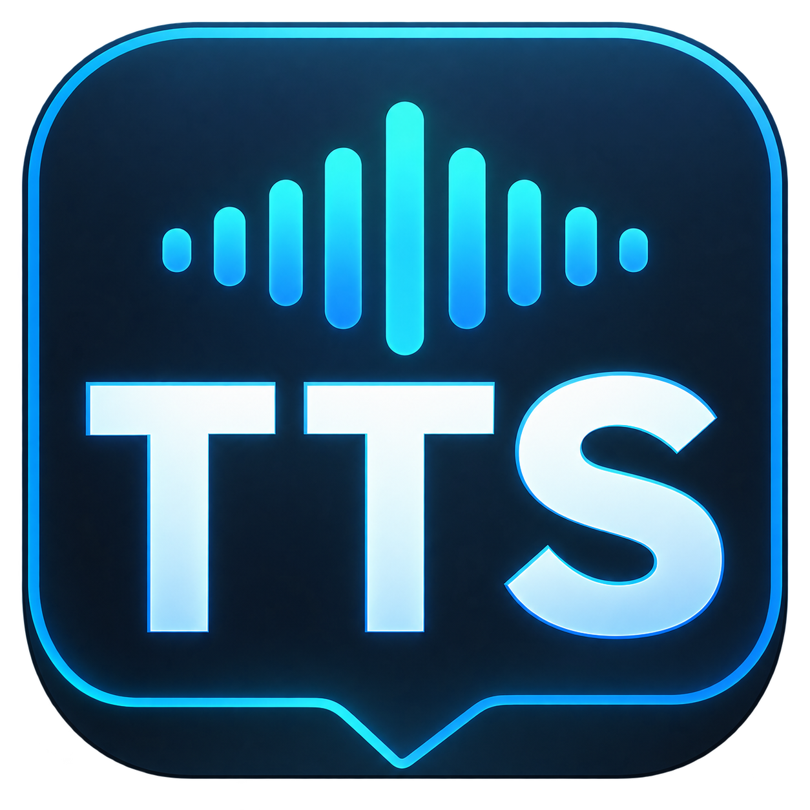
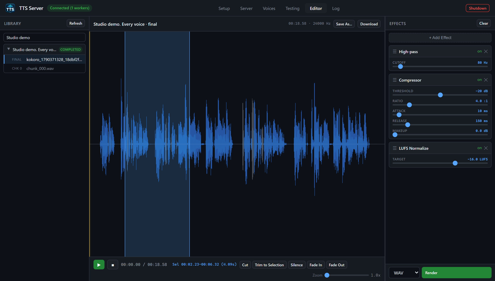

<!doctype html>
<html lang="en">
<meta charset="utf-8">
<meta name="viewport" content="width=device-width, initial-scale=1">
<title>TTS Server — repository hero</title>
<style>
  * { box-sizing: border-box; }
  html, body { margin: 0; width: 1800px; height: 1280px; overflow: hidden; }
  body { font-family: "Segoe UI", sans-serif; color: #f1f6fb; background: #091119; }
  .cover { position: relative; height: 100%; padding: 58px 64px 40px;
    background: radial-gradient(ellipse at 90% 0%, #173a40 0, transparent 52%),
                radial-gradient(ellipse at 5% 95%, #122a45 0, transparent 55%); }
  .top { display: flex; align-items: center; justify-content: space-between; }
  .brand { display: flex; align-items: center; gap: 16px; font-weight: 650; font-size: 30px; letter-spacing: -.6px; }
  .brand img { width: 52px; height: 52px; }
  .platform { color: #a1b5c5; font-size: 16px; letter-spacing: 2px; font-weight: 600; }
  .intro { display: flex; justify-content: space-between; align-items: flex-end; margin: 22px 0 32px; }
  h1 { font-size: 66px; font-weight: 620; letter-spacing: -2.5px; line-height: 1.12; margin: 0; }
  .subtitle { color: #b1c5d4; margin: 0 0 5px; font-size: 21px; line-height: 1.65; text-align: right; }
  .screenshot { padding: 10px; border: 1px solid #3b5666; border-radius: 15px;
    background: #15212a; box-shadow: 0 30px 65px #0007; }
  img { display: block; width: 1650px; height: auto; border-radius: 7px; }
  .footer { display: flex; justify-content: space-between; margin-top: 23px;
    font-size: 16px; letter-spacing: .4px; color: #99afbf; }
  .footer strong { font-weight: 500; color: #76dbb7; }
</style>
<main class="cover">
  <div class="top">
    <div class="brand">Portable TTS Server V2</div>
    <div class="platform">PORTABLE · WINDOWS + WSL2</div>
  </div>
  <div class="intro">
    <h1>Generate speech. Shape the sound.</h1>
    <p class="subtitle">Desktop interface<br>CLI &amp; HTTP API</p>
  </div>
  <div class="screenshot"></div>
  <div class="footer"><span>Engines &nbsp; / &nbsp; Voices &nbsp; / &nbsp; Jobs &nbsp; / &nbsp; Audio editing</span><strong>Real Kokoro narration · af_heart</strong></div>
</main>
</html>
